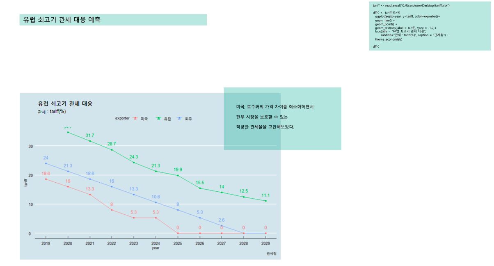

<section class="bg-dark" id="about3">
    <div class="container">
        <div class="row">
            <div class="col-lg-8 col-lg-offset-2 text-center">
                <h2 class="section-heading">소 2조(BEEFT-A!)<br><br>BEEF & FTA</h2>
                <hr class="light">
                <p class="text-faded">2019년 5월 3일, 덴마크 및 네덜란드 쇠고기 수입위생요건이 제정되면서 본격적으로 유럽산 쇠고기 수입의 문이 열렸다. 쇠고기 산업의 공룡들인 미국, 호주에 이어 또 다른 강자인 유럽연합에게 한국 시장 안에서 경쟁할 수 있는 기회를 부여한 것이다. 앞으로 마트에서 한층 더 다양해진 원산지의 축산물 앞에서 고민하고 있는 소비자들을 자주 볼 수 있을 것이다.</p>
                <p class="text-faded">하지만 실질적으로 소비자의 선택의 폭이 넓어질 가능성은 미미하다. 낙농 선진국인 덴마크와 네덜란드에서 고기를 얻기 위해 주로 기르는 소는 리무진, 헤어포드 및 앵거스 종이다. 이들은 모두 미국에서 개량됐거나 미국에서 널리 키우고 있는 종이다. 결과적으로 같은 종류의 쇠고기를 조금 더 다양한 공급처에서 가져와 유통시키는 것에 불과하다. 한우 농가 입장에서도 반갑지 않다. 가격경쟁력을 앞세운 수입축산물과 치열한 사투를 벌이고 있는 와중에 추가적인 부담이 될 뿐이다.</p>
                <p class="text-faded">네덜란드와 덴마크 쇠고기 수입의 시작이 국내 쇠고기 자급률에 미칠 영향을 미리 예측해보고 예측한 바를 통해 국내 한우농가들을 보호할 수 있는 방법에 대해 고찰하기로 했다.</p>
                <a href="https://github.com/YoungjunNa/livestock2019/blob/master/output/%EC%86%8C2%EC%A1%B0/BEEFT-A!.pdf" class="btn btn-primary btn-xl page-scroll">결과물 전체보기</a>
                <a href="https://github.com/YoungjunNa/livestock2019/tree/master/output/%EC%86%8C2%EC%A1%B0" class="btn btn-primary btn-xl page-scroll">코드/데이터</a>
                <br><br>
                <p></p>                

                <!-- <a href="#" class="btn btn-default btn-xl">Get Started!</a> -->
            </div>
        </div>
    </div>
</section>
